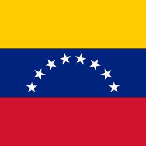
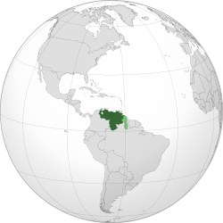

🎭 Cultura
A cultura venezuelana mistura influências indígenas, africanas e espanholas. São muito populares a música llanera, o merengue venezuelano e diversas festas tradicionais.


A Venezuela está localizada na costa norte da América do Sul e é conhecida por suas paisagens naturais, praias caribenhas, montanhas e pela maior queda d'água do mundo, o Salto Ángel.
A cultura venezuelana mistura influências indígenas, africanas e espanholas. São muito populares a música llanera, o merengue venezuelano e diversas festas tradicionais.
A culinária venezuelana é bastante variada.
O Salto Ángel, localizado na Venezuela, possui cerca de 979 metros de altura, sendo a maior cachoeira em queda livre do planeta.